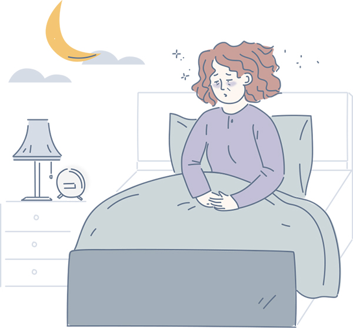

한국의 잠 못드는 밤

수면은 낮 동안 지친 몸과 마음을 회복시키는 중요한 역할을 합니다.
잠이 부족하면 우울증이나 불안증과 같은 정신건강 질환은 물론
신체면역기능과 자율신경계 이상으로 다양한 질환에 노출될 확률이
높지요.
그러나 점점 많은 사람들이 수면장애를 호소하고 있습니다.
잠을 잘 수 있는 충분한 환경과 시간이 있음에도, 우리는 왜 잠에 들지
못할까요?
생활습관 요인☕️
흡연과 음주, 카페인 성분이 포함된
음료를 자주 섭취하는 것은
좋은 숙면을 파괴합니다.
환경적 요인📢
자동차 소리, 비행기 소리,
이웃의 텔레비전 소리와 같은 소음도 수면을 방해할 수 있어요.
신체적 요인🩺
수면 무호흡증, 관절염, 속 쓰림,
월경, 두통, 얼굴의 열감 등의
신체적 요인으로도 잠을 못 이루는
원인이 될 수 있습니다.
심리적 요인😩
스트레스나 환경변화,
그리고 우울증에 의해
불면증을 겪을 수도 있어요.
이와 비슷하게 여러 걱정을 하면서
잠을 설치고, 마침내 잠자는 것에 대해
걱정하게 되면 그 걱정 자체가
수면을 방해합니다.
잠에 들지 못하는 것만 불면증이 아니다?
수면장애 중 대표적인 불면증.
그런데 이 불면증의 종류가 3가지나 있다는 것, 아시나요?
1. 잠들기 어려운 입면장애
2. 자는 중 자주 깨는 수면유지장애
3. 너무 일찍 일어나는 조기각성
잠에 일찍 들더라도 중간 중간 자주 잠을 깨거나, 이른 새벽에 깨서 다시 잠을 자지 못하는 것도 불면증이랍니다.
무엇을 해야 할까?
수면장애를 고치려면 무엇을 해야 하고, 또 무엇을 하지 말아야
할까요?
사람마다 발생 원인과 특성이 다르기 때문에 치료할 수 있는 방법도
여러가지가 있답니다.
저희는 그 중에서도 실생활에서 실천하기 쉬운 방법들을
모아봤습니다.
자, 그럼 함께 꿈나라로 떠날 준비를 해 볼까요?😴